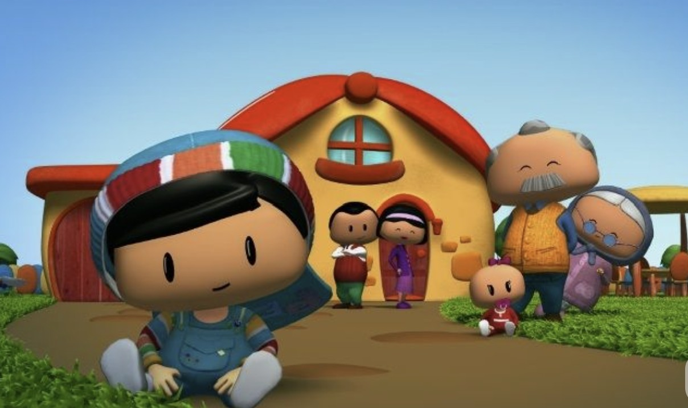

Pepee
2008 yılında ilk yapımına başlanmıştır ve TRT Çocuk'ta yayınlanmıştır. Pepee, Eskişehir'de Düşyeri Çizgi Film Stüdyosu tarafından hazırlanmakta ve 3-6 yaş grubunu hedefleyen bir yapım. Planet Çocuk kanalında yayınlanmaktaydı. Senaryosu; oyuncu Ayşe Şule Bilgiç'e, müzikleri anadolu rock şarkıcısı Kıraç'a aittir.
Pepee, konuşma zorluğu çeken 4 yaşında bir erkek çocuktur. Genellikle mavi tulumu ve mavi şapkasını giyer. Çizgi filmin ilerleyen bölümlerinde konuşma güçlüğünü aşar ve düzgün konuşmaya başlar. Sevimli, sürekli yeni şeyler öğrenmek ve denemek isteyen bir çocuktur.
Kız kardeşi olan Bebee ile olan ilişkisi de çocuklara örnek açısından ebeveynler tarafından sıkça tercih edilen bir çizgi film haline getirmiştir onu.Aile içi ahlakı ve davranışları öğretmeyi amaçlayan kurgusuyla Pepee yayınlandığı dönemin en popüler çizgi filmleri listsinde üst sıralarda yer almıştur.
Sizler de bu keyifli ve eğlence dolu çizgi filmi rahatlıkla çocuklarınıza izletebilirsiniz.